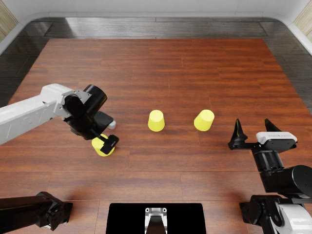

GPT-as-policy
(slow and expensive)

From so simple a beginning endless forms most beautiful and most wonderful have been, and are being, evolved
从如此简单的开端，无穷无尽、最美丽而又最奇妙的形态，已经并且正在演化。
A Simple and Effective Baseline that Ranks No.1 on the Challenging RoboDojo Benchmark

With its diverse manipulation tasks, RoboDojo is our Everest for embodied AI. As of , PhysicalRSI ranks #1 on the RoboDojo-Sim leaderboard. We use RoboDojo as the main testbed to illustrate PhysicalRSI throughout what follows.
(slow and expensive)
(compounding error & OOD everywhere)
(efficient and open-world generalizations)
Representation, state, planning and control: different structures for the harness to revise.
d: digit values · p*ᵢ: target slots
ΔH: add digit localization, ordering and slot assignment.
cᵢ: object identity · pᵢ: stored position
ΔH: retain object–cup correspondence across occlusion.
T = (R, p): orientation and position · T_buf: empty buffer
ΔH: insert a buffer-pose stage and preserve target orientation.
Δp: position error · ΔR: orientation error · ε: tolerances
ΔH: separate approach, alignment and insertion into control stages.
ΔH denotes the skill structure revised by the harness. Diagrams summarize task geometry; videos are independent rollouts.
The agent uses embodied feedback to rewrite its own harness. Validated edits become the harness it uses next.
Use your harness. Rewrite it. Run with it again.
H[0] = initial_harness()Startfor k in range(budget): A[k] = Agent(F, H[k])S2 + H plan = A[k].understand(task)S2 τ[k] = H[k].execute(plan)S1 variants = A[k].rewrite_many(H[k], τ[k])S2 → H pool = [Agent(F, h) for h in variants]Candidates survivor = select_on_eval([A[k], *pool])Selection H[k+1] = survivor.harnessInheritImprove = vary → evaluate → select → inherit.
“Everything should be made as simple as possible,
but no simpler.”
F multimodal agent · H control code · E⁺ / E⁻ success / failure evidence · S / T skills / tools
o / g / m / a observation / goal / episode state / action · k / t revision / control step
Swipe to explore →




E⁺E⁻
System 1 control code
+ patterns− guards

Find four matching tiles.
No selection. Diagnose the miss.
tiles = perceive(rgb)
quad = match_four(tiles)
for tile in quad:
pick_and_place(tile)Revise recognition & tile handling.
Four of a kind. Keep the improvement.
Keep the skill. Refresh the state.
def fold_sleeve(arm, pick, place):
arm.move_above(pick)
home = arm.joints().copy()
arm.move_to(pick)
arm.close_gripper()
arm.move_above(place)
descent = [arm.joints().copy()]
for q in arm.lower_to(place):
descent.append(q.copy())
arm.open_gripper()
for q in reversed(descent):
arm.move_joints(q, step=0.12)
arm.move_joints(home, step=0.12)Carry visual grounding into a different task.
A: pickup · B: charger insertion
φ: pixel-to-world grounding · σ: motor skill · H: task harness · π: policy
from ..general_pickup.rgb_perception import (
pixel_to_world_on_height as ground,
)
x, y = ground(pixel, world_z=surface_z)Read the equation. Place the missing digit.
φ: read · f: solve · σ: motor skill
∘: sequential composition over the task state
scene = read_equation(observation)
digit, slot = solve(scene) # 8 × ? = 0 → 0held = pick(scene.object(digit))
assert attached(held, observe())move(held, above(slot))if aligned(held, slot, observe()):
place(held, slot)≈ Estimated from available official task sheets.
π₀.₅: our motor-policy tool · DM0.5: VLA · Liber-0 Lite: WAM
| Model | SR | Score |
|---|
Official RoboDojo leaderboard ↗ · 28 Sep 2026 edition
PhysicalRSI result sheets & estimates ↓
Selected full rollouts. SR and Score refer to the official evaluation; ≈ marks estimated means.
SR 1%Score 3.87
SR 21%Score 32.47
SR 41%Score 48.80
SR 35%Score 43.47
SR 0%Score 8.80
SR 0%Score 6.00
SR 5%Score 26.67
SR 0%Score 15.07
SR ≈ 94%Score ≈ 94.00
SR 9%Score 9.33
SR 65%Score 65.33
SR 16%Score 16.00
SR 9%Score 18.93
SR 75%Score 78.47
SR 0%Score 10.00
SR 1%Score 13.07
SR 1%Score 13.07
SR 0%Score 0.00
SR ≈ 36%Score ≈ 52.00
SR 3%Score 21.87
SR ≈ 81%Score ≈ 81.00
SR 4%Score 27.33
SR 94%Score 98.33
SR 75%Score 83.70
SR ≈ 100%Score ≈ 100.00
SR 7%Score 7.33
SR 79%Score 79.33
SR ≈ 93%Score ≈ 93.00
SR 0%Score 0.00
SR 86%Score 86.00
SR ≈ 8%Score ≈ 22.20
SR 47%Score 47.33
SR 60%Score 60.00
SR 29%Score 37.13
SR 56%Score 62.27
SR 0%Score 7.60
SR 39%Score 48.43
SR 66%Score 78.93
SR 31%Score 30.67
SR 39%Score 38.67
SR 0%Score 2.00
SR 0%Score 4.67
SR 0%Score 0.00
SR 0%Score 2.40
SR 0%Score 1.90
SR 0%Score 0.00
SR 0%Score 1.10
SR 0%Score 0.00
SR 0%Score 10.13
SR 0%Score 0.00
SR 0%Score 6.67
SR 1%Score 0.67
No videos in this selection.
Goal Fold both sleeves, then fold the hem up.
Recorded attempts play as one continuous video.
Video could not load.
Task metrics use the official result sheets. Missing means are estimated from available seeds; category estimates are marked ≈. Generalization uses its paired standard/random evaluation slice. Videos are selected rollouts, while evolution trajectories show development iterations.
Official results ↓ · Leaderboard snapshot · Full-rollout provenance · Skill video index
212 recorded clips across 40 tasks. Explore skills and their task sequences.
Hover a module to inspect the corresponding skill.
skill_name()The selected video clip and its recorded time window appear here.
HOW TO READ IT The atlas contains 212 extracted skill windows. Each detail view links one block to one task, camera, episode, and time-bounded video clip.